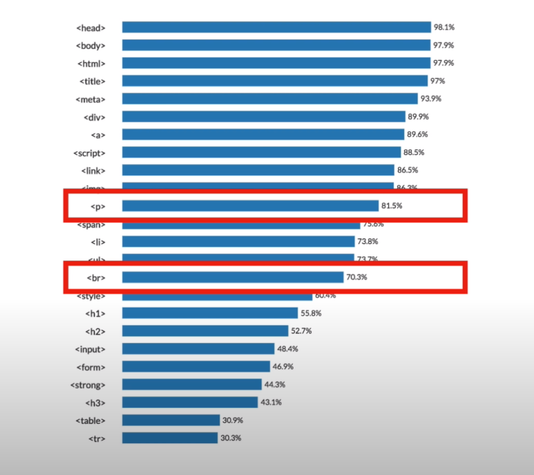

Hypertext Markup Language (HTML) IS the standard markup
language for creating web pages and web applications.
<procedure
1.검색어 html 이름 tag
2.빈줄 넣기 br
new ling tag
best html coding
3.머릿글 h#
4.밑줄 u
web
5.강조 strong
creating web pages
6.단락 p
This is some text in a paragraph.
hello
7.이미지 삽입 img
 attribute속성
attribute속성
8.tag 사용 빈도 랭킹

9.OL ORDERED LIST 자동으로 순서를 정렬한다.
10.UL UNORDERED LIST
11.li list
12.a 하이퍼링크
13.title 툴팁
| head |
98.1% |
| body |
97.9% |
| html |
97.9% |
web1
<